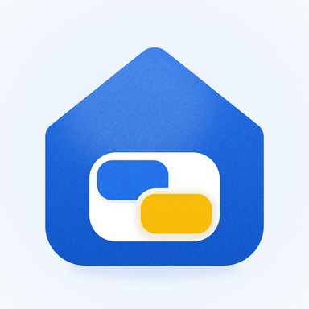

カジドリ
家事を分けて、時間でまわす。
来週の家事を、家族やパートナーとあらかじめ分けて予定に並べておくと、当日はストップウォッチと手順ナビでそのまま進められます。かかった時間は記録に残り、次の見積りが少しずつ実態に近づいていきます。公平さを競う点数やランキングはありません。アカウント不要・広告なし・データは端末内だけで完結するiPhone向けアプリです。
iOS 18.0 以降 / iPhone 向け
分けて、まわすための道具
-
メンバーを迎える
名前と色でメンバーを登録するだけで、担当を割り振れるようになります。アカウントも招待リンクも要りません。無料では2人まで、Pro なら6人まで迎えられます。アーカイブしても、それまでの記録は名前ごと残ります。
-
家事テンプレート
家事に名前・カテゴリ・手順・繰り返す曜日を設定しておくと、毎週同じ手間で予定に呼び出せます。すぐ使えるプリセットを15件用意しました。無料では合計15件まで、Pro なら何件でも増やせます。
-
来週の予定を決める
週間ボードと月間カレンダーで、来週以降の家事をあらかじめ担当・見積り時間つきで並べておけます。毎週決まった曜日の家事は、繰り返し設定でまとめて先まで自動的に作成されます。
-
今日の家事
今日担当する家事が一覧になり、合計の見積り時間とメンバーごとの時間が一目で分かります。「〜15分」「〜30分」で絞り込んだり、前日までの持ち越しもここに並びます。
-
タイマーと手順ナビ
家事を開始すると、大きなタイマーと「今の手順・次の手順」が画面いっぱいに出ます。チェックで次に進み、途中でアプリを閉じても経過時間を保ったまま作業中の画面に戻れます。
-
完了記録と見積り学習
終わったら「記録する」を押すだけ。予定との差やメモを添えられ、実測が直近3回ぶん積み重なるほど次回の見積りが実態に近づいていきます。極端な記録は反映するかどうかをあとから選べます。
-
記録
週・月ごとの予定対実測、担当別・家事別の内訳、傾向の気づきをまとめて振り返れます。過去の記録は無料で直近30日、Pro でずっと前まで見返せます。
-
通知
朝は今日の家事、夜は明日の予定と今日の残りを、件数と合計時間だけでそっと知らせます。何も無い日は通知が届きません。種類ごとにオン・オフできます。
メンバーを6人まで迎えること・家事テンプレートを何件でも増やすこと・記録をずっと前まで見返すこと・ダークモードや自動切り替えを選ぶこと・JSON形式でのデータの書き出しと読み込みは、カジドリ Pro でご利用いただけます。無料のままでも、メンバー2人・家事テンプレート15件・直近30日の記録・予定と繰り返し・タイマーと手順ナビ・通知はすべてお使いいただけます。詳しくはサポートをご覧ください。
家事の記録は、あなたの端末の中に
メンバー・家事テンプレート・予定・完了の記録・メモは、すべて端末内の1つのファイルに保存され、外部に送信されることはありません。品質改善のための匿名の利用状況の計測は行っていますが、送るのは操作の種別や、人数・件数・分数といった数、選ばれた選択肢といった記録で、家事名・手順の本文・メモ・メンバー名は一切含まれません。詳細はプライバシーポリシーをご覧ください。
来週の家事を、先に決めよう。
よくあるご質問はサポートに掲載しています。お問い合わせ: tempuraapps.support@gmail.com